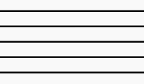

The Basics
First off, this is a picture of sheet music.
 There looks like there's a lot here, and for a beginner it is. So for now none of it matters.
There looks like there's a lot here, and for a beginner it is. So for now none of it matters.
To start, we will be looking at this.
 This is a line of music, it is technically called a "grand staff". A grand staff consists of a top staff and a
bottom staff. On the left side of each line there is a brace that connects the top and bottom staffs. There
is also a bar, pictured on the right, that connects the top and bottom as well, but we'll get more into that
later. Also show here are the treble clef, bass clef, and time signature. There can also be a key signature,
but that is a more advanced topic.
This is a line of music, it is technically called a "grand staff". A grand staff consists of a top staff and a
bottom staff. On the left side of each line there is a brace that connects the top and bottom staffs. There
is also a bar, pictured on the right, that connects the top and bottom as well, but we'll get more into that
later. Also show here are the treble clef, bass clef, and time signature. There can also be a key signature,
but that is a more advanced topic.
All of the above is important to know but...

This is a single staff. A staff is just five lines. This is what the notes go on.